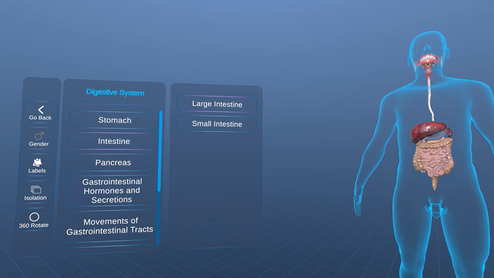
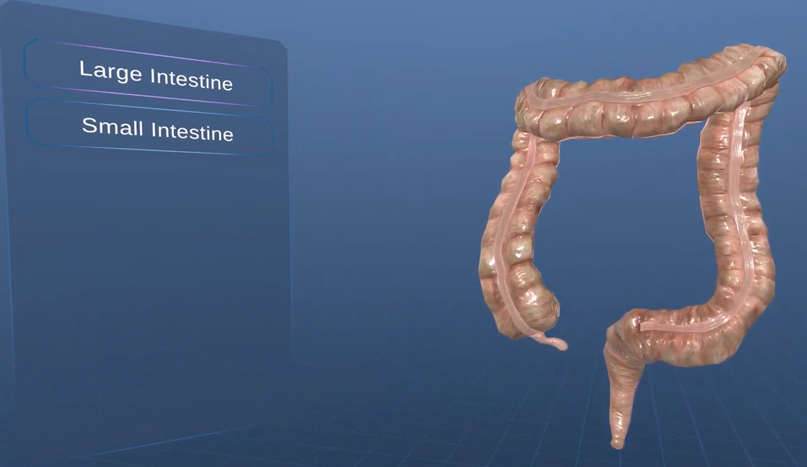
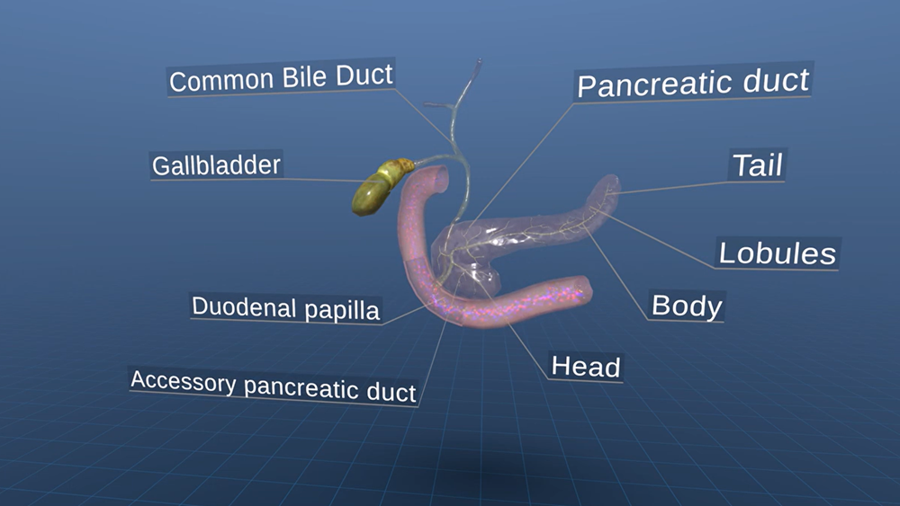

.png)
Not long ago, mastering the human digestive system meant spending long hours in cadaver labs: dissecting, memorizing, and repeating. It was messy, expensive, and for many students, emotionally overwhelming.
Fast forward to today, and we’re entering an era where technology - specifically virtual reality - is taking that scalpel out of your hand and replacing it with a VR headset.
No mess. No exposure risks. Just immersive, intelligent learning.
For medical colleges and institutions across the world, the question isn’t if to adopt VR for digestive system anatomy training - it’s when. And if you haven’t already started considering it, this might be the right time to take a closer look.
Let’s uncover how VR is not just reshaping the learning experience but also making it safer, smarter, and way more accessible for today’s educators and tomorrow’s healthcare professionals.
The Realities of Traditional Anatomy Teaching
Why Traditional Tools Fall Short
Before we zoom into the virtual, let’s step back and assess the status quo.
Most medical students today still rely on;
• Cadaver dissection (expensive, limited access, emotionally taxing)
• 2D textbook diagrams (lacking depth)
• Plastic models (inflexible, simplified)
• Cross-sectional illustrations (hard to visualize spatially)
While these methods have their place, they don’t always help students fully grasp the complexity of digestive system structures, functions, or real-time physiological processes.
Enter VR: Not Just a Trend, But a Teaching Revolution
Virtual reality has moved beyond gaming and sci-fi. In medical education, it's being used to simulate real-life anatomy in 3D, offering educators a chance to teach with more clarity and safety than ever before.

Here’s what’s changing for good:
• Risk-Free Learning Environment: With VR, students can explore the digestive system anatomy without the risk of damaging a real specimen.
• 360° View of Internal Structures: Instead of flipping pages, learners can "walk through" the digestive tract and observe its parts in full scale and motion.
• Unlimited Practice Time: Students can repeat procedures or explorations as many times as needed - no pressure, no time limits.
• Remote Access: All they need is a headset and access to the VR software. Perfect for hybrid and distance learning environments.
• See Every Detail Up Close: VR allows students to zoom in and inspect even the tiniest structures - something that's nearly impossible in traditional lab settings.
Breaking Down the Digestive System - In 3D
Medical professors are finding that VR platforms offer more than just cool graphics. They’re built to mimic real human anatomy down to the micro detail.
Imagine guiding your students through:
• The mouth, watching the mechanical breakdown of food in action
• The esophagus, tracing peristalsis in real time
• The stomach, seeing gastric juices do their work
• The small and large intestines: understanding absorption and excretion

All of this is made possible by VR platforms that allow learners to interact with the anatomy of the digestive system like never before.
And here’s the kicker - it’s not just visual. Many platforms now offer haptic feedback, so learners can feel tissue resistance, simulate endoscopic procedures, and more.
Smarter Teaching = Better Learning Outcomes
Educators are always looking for ways to improve student engagement and retention. VR makes that easier by stimulating multiple senses and promoting active learning.
Studies have shown that students learning with VR retain significantly more information compared to those using traditional methods. Why? Because they’re not just watching—they’re doing.
For medical colleges, this means:
• Higher comprehension of digestive anatomy
• Better preparation for clinical practice
• Improved exam scores
• More confident future surgeons and physicians

And since VR lessons can be standardized, you can ensure every student gets the same high-quality instruction - no matter where they’re learning from.
Safer, Ethical, and Effortless Learning with VR
One of the biggest wins for VR in medical education is the elimination of safety concerns tied to traditional labs.
Cadaver dissection comes with risks:
• Exposure to formaldehyde
• Cross-contamination
• Need for strict biohazard protocols
• Emotional discomfort for some students
VR eliminates all of these. No real bodies involved, no lab maintenance, and zero exposure risks. That’s a huge win for institutional liability and budgeting.
Is it affordable? Absolutely.
If your institution is evaluating the financial feasibility of VR, it’s worth noting that VR-based learning is already 52% more cost-effective than traditional in-person instruction.
While high-end VR systems used to be pricey, many options today are surprisingly affordable. You don’t need a top-tier rig for every student - just a few shared devices can transform your anatomy labs.
Plus, there are platforms that offer subscription-based models with flexible content updates, so you're not stuck with outdated material. It's a long-term investment that scales with your institution’s growth.
Here’s what you might need to get started:
• VR headsets (like Meta Quest, HTC Vive, etc.)
• Comprehensive curriculum mapped VR content from providers like iXRLabs.
• Initial technical support and training to ensure smooth implementation.
Looking Ahead: What’s Next for VR in Anatomy Education?
We're just scratching the surface. Future developments in VR tech will likely include:
AI-assisted teaching avatars that help guide students through exercises
Multi-user VR classrooms, where students and faculty interact together in the same virtual space
Augmented reality integration, overlaying digestive structures over real patients for clinical simulations
As this technology evolves, early adoption by institutions will give them a serious edge - attracting top-tier students and faculty who want to be part of forward-thinking programs.
Final Thoughts: A Smarter Way to Teach the Digestive System in VR
Using VR for the digestive system isn't about chasing trends. It's about improving safety, saving costs, and delivering better education. For institutions looking to modernize their approach and meet the needs of today's tech-savvy learners, this isn’t just a cool idea - it actually makes a real difference.
So if your medical college is still leaning on 20th-century tools, maybe it’s time to take a small but meaningful step into the future. VR won't just change how you teach, but it'll change how your students learn.
Ready to bring a virtual anatomy lab to your campus? It could be the most impactful upgrade your medical education program makes this decade.